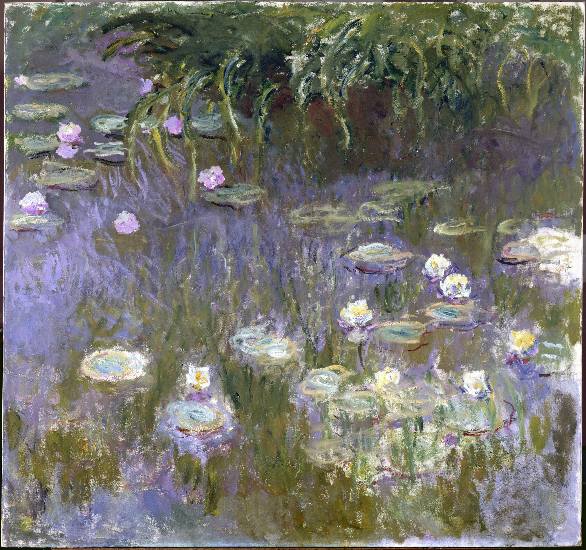
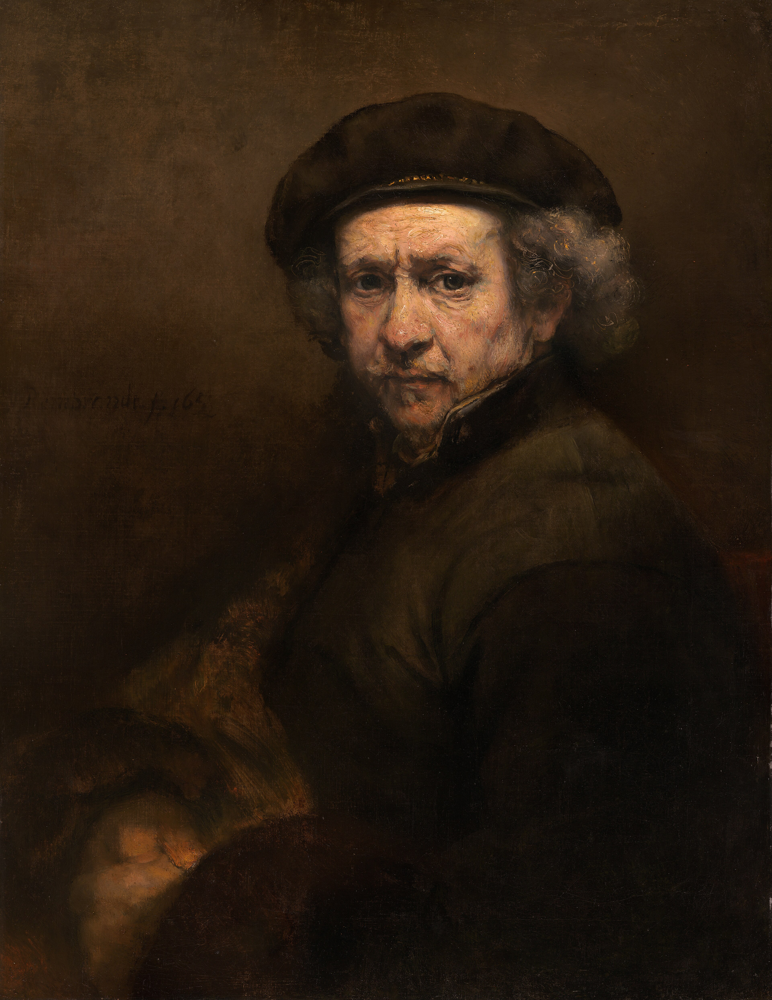

Masterworks
three that changed everything

The Starry Night
Vincent van Gogh · 1889
The painting that turned a troubled man into the best-selling name in the market's history. Fourteen months before the Rothko record fell, van Gogh's own record changed what a 20th century canvas could command.
held at the Museum of Modern Art · New York

Water Lilies
Claude Monet · 1914–26
The late panoramas of Giverny, painted as the cataract dimmed the world into pure colour. The most recognisable abstract gesture in Western art, and the series that never stops setting private records.
largest panels at the Musée de l'Orangerie · Paris

Self-Portrait
Rembrandt · 1659
Painted the year his house and fortunes were sold off, the face unbothered by any of it. The market's favourite proof that the life never touches the work — and the detail every cataloguer photographs first.
the spring record · a portrait that outlived the sitter